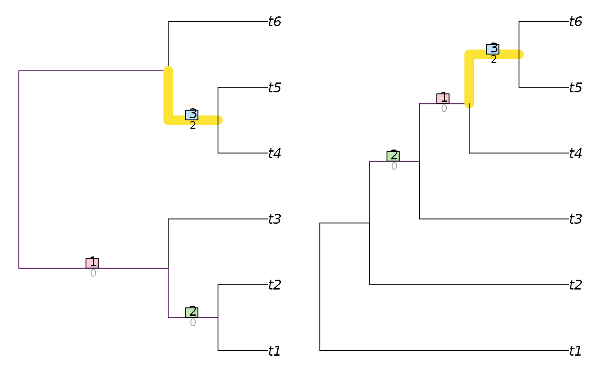

Calculate the Matching Split Distance (Bogdanowicz and Giaro 2012; Lin et al. 2012) for unrooted binary trees.
Usage
MatchingSplitDistance(
tree1,
tree2 = NULL,
normalize = FALSE,
reportMatching = FALSE
)
MatchingSplitDistanceSplits(
splits1,
splits2,
nTip = attr(splits1, "nTip"),
normalize = TRUE,
reportMatching = FALSE
)Arguments
- tree1, tree2
Trees of class
phylo, with leaves labelled identically, or lists of such trees to undergo pairwise comparison. Where implemented,tree2 = NULLwill compute distances between each pair of trees in the listtree1using a fast algorithm based on Day (1985) .- normalize
If a numeric value is provided, this will be used as a maximum value against which to rescale results. If
TRUE, results will be rescaled against a maximum value calculated from the specified tree sizes and topology, as specified in the "Normalization" section below. IfFALSE, results will not be rescaled.- reportMatching
Logical specifying whether to return the clade matchings as an attribute of the score.
- splits1, splits2
Logical matrices where each row corresponds to a leaf, either listed in the same order or bearing identical names (in any sequence), and each column corresponds to a split, such that each leaf is identified as a member of the ingroup (
TRUE) or outgroup (FALSE) of the respective split.- nTip
(Optional) Integer specifying the number of leaves in each split.
Value
MatchingSplitDistance() returns an array of numerics providing the
distances between each pair of trees in tree1 and tree2,
or splits1 and splits2.
Details
Trees need not contain identical leaves; scores are based on the leaves that
trees hold in common. Check for unexpected differences in tip labelling
with setdiff(TipLabels(tree1), TipLabels(tree2)).
Normalization
A normalization value or function must be provided in order to return a normalized value. If you are aware of a generalised formula, please let me know by creating a GitHub issue so that it can be implemented.
References
Bogdanowicz D, Giaro K (2012).
“Matching split distance for unrooted binary phylogenetic trees.”
IEEE/ACM Transactions on Computational Biology and Bioinformatics, 9(1), 150–160.
doi:10.1109/TCBB.2011.48
.
Day WHE (1985).
“Optimal algorithms for comparing trees with labeled leaves.”
Journal of Classification, 2(1), 7–28.
doi:10.1007/BF01908061
.
Lin Y, Rajan V, Moret BME (2012).
“A metric for phylogenetic trees based on matching.”
IEEE/ACM Transactions on Computational Biology and Bioinformatics, 4(9), 1014–1022.
doi:10.1109/TCBB.2011.157
.
See also
Other tree distances:
JaccardRobinsonFoulds(),
KendallColijn(),
MASTSize(),
NNIDist(),
NyeSimilarity(),
PathDist(),
Robinson-Foulds,
SPRDist(),
TreeDistance()
Examples
MatchingSplitDistance(lapply(rep(8, 5), ape::rtree), normalize = 16)
#> 1 2 3 4
#> 2 0.7500
#> 3 0.8125 0.6875
#> 4 0.7500 0.7500 0.8125
#> 5 0.3750 0.7500 0.5625 0.8750
MatchingSplitDistance(TreeTools::BalancedTree(6),
TreeTools::PectinateTree(6),
reportMatching = TRUE)
#> [1] 2
#> attr(,"matching")
#> [1] 2 1 3
#> attr(,"matchedSplits")
#> [1] "t1 t2 t3 | t4 t5 t6 => t4 t5 t6 | t1 t2 t3"
#> [2] "t1 t2 | t3 t4 t5 t6 => t3 t4 t5 t6 | t1 t2"
#> [3] "t4 t5 | t1 t2 t3 t6 => t5 t6 | t1 t2 t3 t4"
#> attr(,"matchedScores")
#> [1] 0 0 2
#> attr(,"pairScores")
#> [,1] [,2] [,3]
#> [1,] 1 0 1
#> [2,] 0 1 2
#> [3,] 2 1 2
VisualizeMatching(MatchingSplitDistance, TreeTools::BalancedTree(6),
TreeTools::PectinateTree(6))
